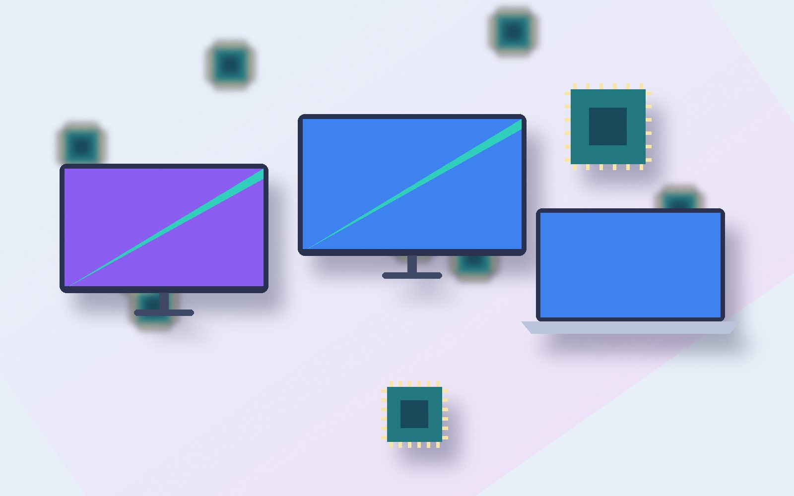
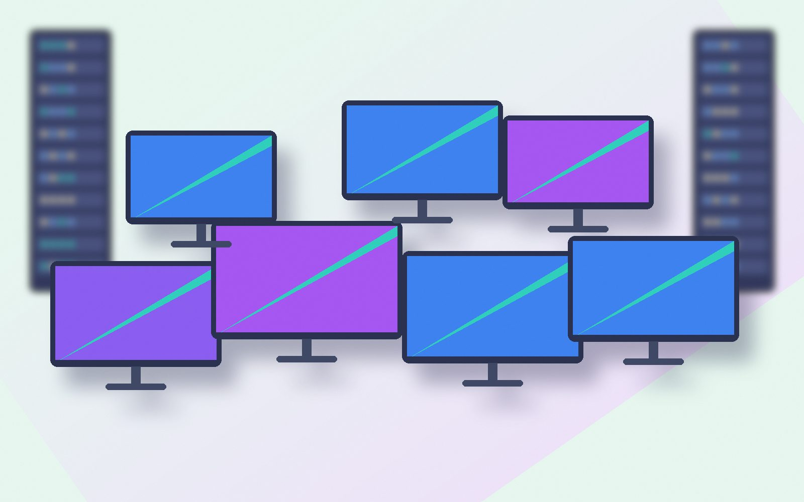
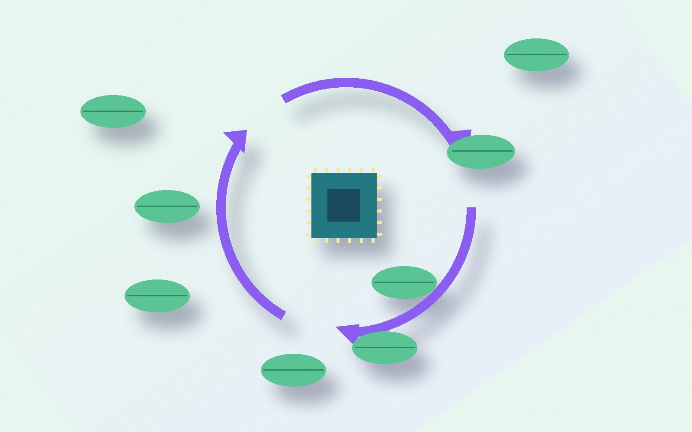
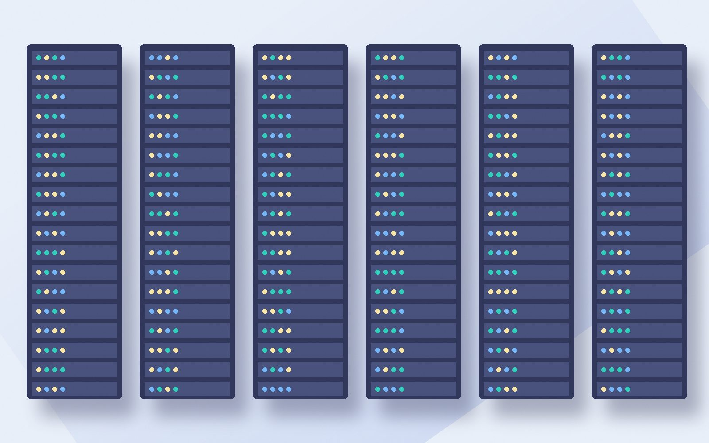

Smart Tracking for a Cleaner Digital Future
Track, manage, recycle, and responsibly dispose of IT e-waste with intelligent digital technology.

E-Waste Is Growing. Smart Management Is the Solution.
Rapid technology upgrades are creating increasing amounts of obsolete IT equipment. Without proper tracking and disposal, valuable materials are lost and environmental risks increase.

One Platform. Complete E-Waste Visibility.
EcoTrack AI gives you centralized visibility across the complete IT equipment lifecycle, from first deployment to final recovery.
| Asset ID | Device | Department | Condition | Status |
|---|---|---|---|---|
| ET-1024 | Laptop | Finance | Retired | Collection |
| ET-1025 | Monitor | HR | Reusable | Refurbishment |
| ET-1026 | Server | IT | Retired | Recycling |
| ET-1027 | Smartphone | Sales | Reusable | Recovery |
From Obsolete Device to Responsible Recovery
Track Every Device. From Office to Recycling.
Follow each asset across four stops with live status and distance.
- Device
- Dell Latitude 5420
- Asset ID
- ET-1042
- Status
- In Transit
- Current location
- IT Office
- Destination
- Recycling Facility
- Last updated
- 2 min ago
Live E-Waste Tracking Demo
Select a device to see its record update.
Turn E-Waste Data Into Actionable Insights
Monthly E-Waste Collection (kg)
Device Category Distribution
Recycling & Recovery
Environmental Impact
From First Use to Responsible Recovery
Select a stage to see what happens there.
Measure the Impact of Responsible E-Waste Management

CO₂ Emissions Avoided
Materials Recovered
Devices Reused
Energy Saved
Give Technology a Second Life
Building a Circular Digital Economy
Secure Data Before Responsible Disposal
Retired laptops, servers and phones often still hold company data. Every device must be identified, wiped and verified before it leaves your control.
- Device identification
- Data sanitization
- Secure disposal
- Verification report

Everything You Need to Manage IT E-Waste
Powered by Smart Digital Technology
Hover or focus a node to see what it does.
Frequently Asked Questions
Ready to Make IT E-Waste Smarter?
Track every device, recover valuable resources, and build a more sustainable digital ecosystem.